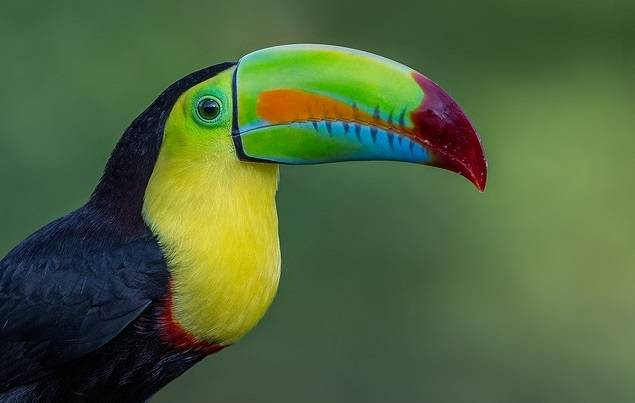

AVES

Los ranfástidos (Ramphastidae), conocidos comúnmente como tucanes, diotedé o diostedé son una familia de aves ranfástidas del orden de los piciformes
es muy amplia ya que alberga seis géneros y cuarenta y dos especies diferentes de tucanes. Se caracterizan por poseer un pico muy desarrollado y de
vivos colores. Miden entre 18 y 65 cm, siendo el tucán toco (Ramphastos toco) el de mayor tamaño. Están ampliamente distribuido por el continente
americano, desde México hasta Argentina. Algunas especies están en selvas húmedas tropicales de baja altitud, mientras que otras habitan en bosques
más templados, en cordilleras, a altitudes hasta los 3000 m s. n. m.. El nombre de este grupo de aves procede del guaraní: tupí tucana. Los tucanes son aves americanas, ampliamente distribuidas desde México hasta Argentina.
Normalmente prefieren las selvas húmedas tropicales de baja altitud, aunque también existen especies adaptadas a los bosques templados a 3000 msnm.
Sus nidos suelen estar en agujeros dentro de los árboles. Es una especie sedentaria, que habita la misma región toda su vida.
CARACTERISTICAS
- se caracterizan por tener un pico muy grande, y colores muy llamativos en sus plumas.
- Pueden llegar a medir entre 18 y 65 centímetros de largo
- pesan de 130 hasta 680 gr
- aunque en apariencia resulta mucho más grande, esas son sus verdaderas medidas.
- El tucán utiliza su hermoso pico para alcanzar frutas que se encuentra en ramas muy pequeñas